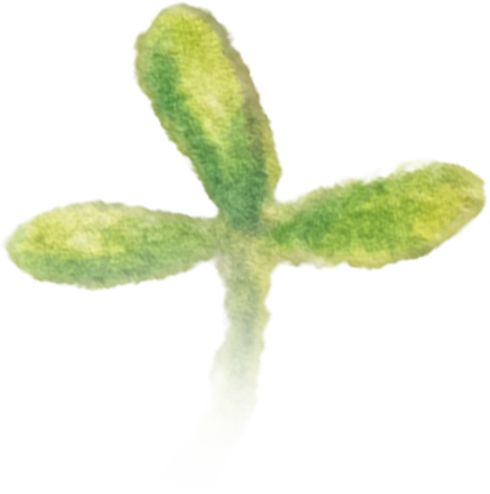
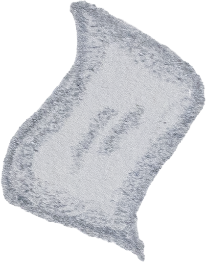
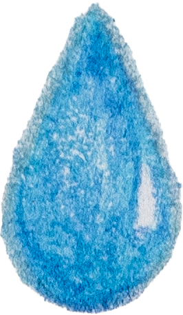
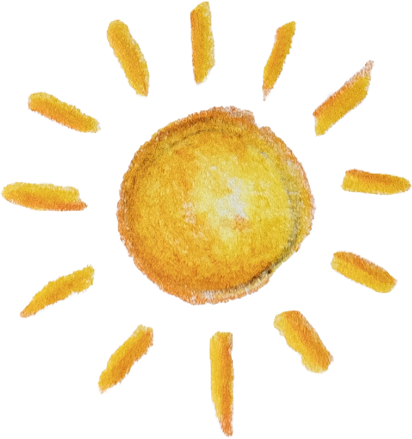
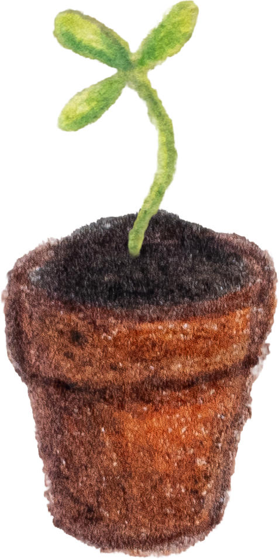

Manual de plantio
Germinação
O que você vai precisar:
- Pote plástico
- Algodão
- Filme plástico

Preparo
Coloque as sementes em um pote plástico, envolvidas no algodão úmido, cubra o pote com filme plástico mantendo ele lacrado, abrindo somente para molhar o algodão, cuidado para não encharcar.
-

O papel filme formará um tipo de estufa. Deixe em local meio à sombra, durante a germinação.
-

Molhe o algodão a cada 3 ou 4 dias, sempre direcionando em poucas quantidades de água, de preferência use um borrifador.
-

A iluminação solar deve ser indireta, nesta fase.
Depois de
germinadas
-
Espere a semente germinar.
Mantenha o algodão úmido, mas não encharcado, e observe até surgir uma raizinha.
-

Prepare um vaso com terra.
Escolha um vaso com furinhos embaixo para a água escoar. Use uma terra própria para plantio, de preferência leve e rica em matéria orgânica.
-
Faça um pequeno buraco na terra.
Não precisa ser muito fundo — em geral, cerca de 1 a 2 cm, dependendo do tamanho da semente.
-
Transfira a semente com cuidado.
Coloque a raiz voltada para baixo e cubra delicadamente com terra. Evite apertar demais.
-

Regue levemente. A terra deve ficar
úmida, mas não encharcada. -
Deixe em um local iluminado.
Depois que a muda começar a crescer e aparecerem as primeiras folhinhas, ela pode receber mais luz gradualmente.

Processo de
criação do livro
Cada página guarda um gesto, cada costura carrega uma intenção. Um conto sobre a coragem de ser quem somos e a descoberta de nossas verdadeiras raízes.
 FAÇA SUA ENCOMENDA DO LIVRO
FAÇA SUA ENCOMENDA DO LIVRO